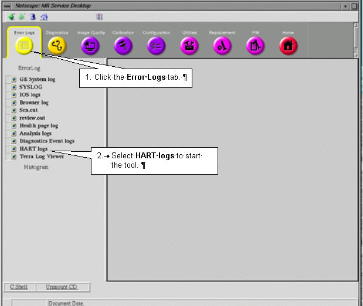

Operating Documentation
Direction 5133315-3, Rev# 14
Signa EXCITE HD 1.5T Service Methods
Module Version 1.0, Version Date 4/27/07
Operating Documentation |
HART is an acronym for Hardware Tracker.
HART is a new service tool used to view the hardware configuration of the components in the MGD Chassis, RRF Chassis, and Driver Module. HART gives information about the current status of the boards and it can also track and report board replacements. Two logs are generated by HART: the Current Status Log, which is Class A, and the History Log, which is Class C.
Log file operations are listed below.
On boot up, if a HART log file, either Current or History, is not present, HART will create the new log file.
The HART logger will detect changes to the hardware configuration with reference to the contents of the current status file.
When a HART log file grows to a size of 3 MB, a backup will be made. Any existing backup will be overwritten.
After a backup for a HART log file is made, a fresh log file will be started.
HART log files are kept encrypted in the system.
Log files will be saved on the Save/Restore Info MOD.
On the host computer, open the Service Desktop Manager.
On the Service Desktop Manager, click the [Service Browser] button.
In the Service Browser, select the Error Logs tab. Follow the instructions on Illustration 1, below.
Illustration 1: Starting the HART Viewer

Clicking the HART logs link will open the HART log selection page. See Illustration 2.
Illustration 2: HART Start Page

The three available choices are:
HART Current System Log
HART History Log
HART History Log Backup
The Current Status Log will display the current hardware configuration in the MGD Chassis, RRF Chassis, and Driver Module. During every system reboot and TPS Reset, HART and queries an ID chip on most of the newer boards. The results of this query are displayed in the current HART log. This gives the HART log information about each board’s install date, board type, board location, board revision, firmware revision, serial number, current date, and power-on diagnostic results. See Table 1 for a breakdown of the information in the HART log.
Table 1: HART Log Field Definitions
| FIELD | DEFINITION |
| Install Date | The first time a board is installed and a TPS reset occurs, the date is stored in this field. |
| Board Type | Board name or acronym |
| Board Location | Board slot number. Note that daughter boards have the same slot number, but a letter designation. |
| Board Revision | The revision of the board |
| Firmware Revision | The firmware revision, if any |
| Serial Number | The unique serial number given by the ID chip. This number does NOT match the bar code serial number on the board. |
| Current Date | The date and time you access the HART Log program |
| Power On Diag Results | Whether or not the program was successful in reading the serial number of the board. |
| NOTE: | If a board does NOT have information available via the ID chip, one or more of the fields may be empty. |
Illustration 3 shows an example of a HART Current Status Log.
Illustration 3: Partial HART Example Current Status Output

The HART History Log displays a history of board replacements within the MGD Chassis, RRF Chassis, and Driver Module. The history file is created when the Current HART Log is created. At first-time startup, the history log content should match the current log.
If a board is replaced or fails in such a way that HART cannot read the ID chip, an entry is added to the History log indicating that either a different board has been installed or a board is missing. The HART History file is triggered after querying the hardware. It compares the values to the current log. A change is flagged if it detects a change in board serial number, revision number or firmware revision. In this case, a new row is created with the replacement board name, etc., but also the old serial number and the new serial number. In addition, a user can leave comments in history log entries. This feature is intended to be used by service to document the cause for events.
The HART History Log will be useful in the following cases:
During troubleshooting, it will detect a change from its previous configuration.
Where there have been intermittent errors and board replacements, it will help remind or inform other site FE’s who might be troubleshooting the system.
It will assist the On-Line Center or on-site engineers in remotely detecting changes.
Pro-Diags can retrieve history files and flag high-failure-rate board information and provide feedback to Engineering.
See Illustration 4 for an example of History Log output.
Illustration 4: Example History Log Output

Illustration 5: Comment Entry Form